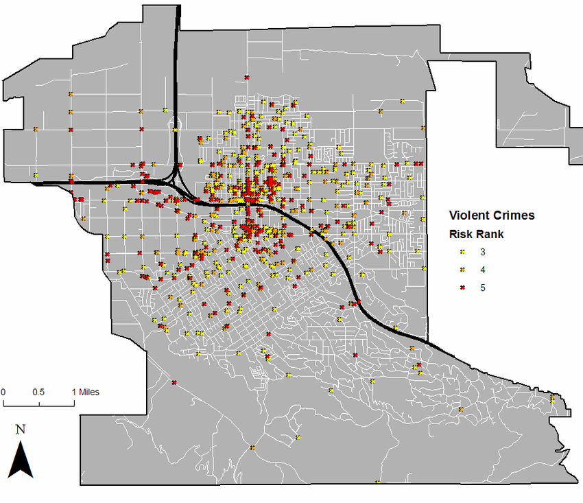

<!DOCTYPE html>
<html lang="en-US"></html>


<div class="topgrading">
<head>
  <h1 class="title int">Crime Mapping System</h1>
  <link href="style.css" rel="stylesheet"/>
</head>


<first class="first">

<body>
<div class="box">
<intro>
<p class="intro">
  Crime mapping systems, rooted in Geographic Information Systems (GIS), have emerged as indispensable tools in the realm of 
  law enforcement, offering a dynamic and insightful approach to understanding and combating criminal activities. By harnessing 
  the power of GIS technology, these systems transform raw crime data into visually compelling maps that reveal spatial patterns 
  and trends. This integration of spatial and non-spatial information empowers law enforcement agencies to make informed decisions, 
  strategically allocate resources, and develop targeted crime prevention strategies. Beyond mere mapping, these systems provide 
  a comprehensive understanding of the complex interplay between various factors influencing criminal behavior, from demographic 
  information to environmental elements.

  At the heart of crime mapping systems lies the concept of hotspot analysis, which enables law enforcement to identify areas with
   elevated crime rates. This not only facilitates a more focused deployment of personnel but also allows for proactive intervention 
   in potential trouble spots. Moreover, the visualization tools inherent in these systems make crime data accessible to the public, 
   fostering community engagement and collaboration in the pursuit of enhanced public safety. As technology continues to evolve, crime 
   mapping systems stand as a testament to the marriage of innovation and law enforcement, promising a more effective and data-driven 
   approach to crime prevention. 
</p>
</div>
</intro>


<div class="keyhistory">

<h3 class="headings">Key Components of Crime Mapping Systems: </h3>
  
 <ol>

  
  <li>	Geographic Information Systems (GIS):</li> 
  <p>GIS technology serves as the backbone of crime mapping systems, enabling the integration of spatial and non-spatial data. This 
  allows for the creation of dynamic maps that display crime incidents in relation to geographical features. </p>
  
  <li>Data Integration: </li>
  <p>Crime mapping systems amalgamate diverse datasets, including crime reports, demographic information, and environmental factors. 
  This integration provides a comprehensive understanding of the spatial dimensions of criminal activities. </p>
 
  <li>Visualization Tools: </li>
  <p>Advanced mapping tools facilitate the creation of visual representations, making it easier for law enforcement, policymakers, and 
    the public to interpret complex crime data. These tools contribute to more effective communication and decision-making.</p>


 </ol> 


<h4 class="headings">HISTORY OF CRIME MAPPING: </h4>

<p>The history of crime mapping systems can be traced back to the late 20th century when advancements in technology and computing
   began to influence various fields, including law enforcement. In the 1970s and 1980s, police departments started using computerized
    systems to store and manage crime data, marking the initial steps toward the development of crime mapping tools.</p>

  <p>The emergence of Geographic Information Systems (GIS) in the 1990s played a pivotal role in the evolution of crime mapping.
    GIS allowed law enforcement agencies to integrate spatial information with crime data, enabling them to visualize and analyze
    patterns more effectively. This technological innovation empowered agencies to make data-driven decisions and allocate resources
    strategically.</p>

  <p>By the early 2000s, crime mapping systems became more sophisticated, incorporating real-time data updates and interactive features.
    These advancements facilitated improved collaboration among law enforcement agencies and increased public awareness. Citizens could
    access online crime maps to stay informed about local crime trends, enhancing community engagement and fostering a sense of security.
    The integration of predictive analytics and machine learning in recent years has further enhanced crime mapping systems.</p>

  <p>hese technologies enable law enforcement to forecast potential crime hotspots, allocate resources proactively, and implement
     preventative measures. However, concerns have also arisen regarding privacy and bias in the use of predictive policing algorithms,
      prompting ongoing discussions about ethical considerations and appropriate use.</p>
    </div>

<div class="getting">
<h5 class="headings">GETTING CRIME ONTO A MAP: </h5>
<div class="thefirst">
<p>The first use of mapping can be traced back to the early 19th century. France and England were the first countries to use crime
   mapping. Crime analysis is just a little younger then crime itself (Justice Academy). As the first crime was committed and logged,
    following crimes were also logged, thus, crimes were analyzed to formulate patterns therein. Mapping of these crimes were on a big
     map and the crimes were charted by pins.</p>
    </div>



<p>This method was useful for the present crimes, as it showed where the crimes were occurring. However, as new crimes were committed
   and old pins were being replaced, the data Running header: Crime Mapping 4 of past crimes was lost. The best way for this map to be
   saved was to take a photograph of it and save it for future comparisons. This method was flawed, because at the time there was no way
   of tracking specific crimes such as robberies, burglaries, homicides and others, due to the fact that the crimes would overlap. This
   would make it extremely difficult to analyze a specific crime. Also, when pins of different colors were being used, the map could
   be just too difficult to read and understand. Pin maps were useful in the beginning of the crime cycle, as time progressed and more
   crimes were committed and added to the map, it made the map useless to the user. Visualize a world without the use computer mapping.
   There are many who believe that “informal crime analysis, in its simplest sense, is performed by all officers as they investigate
   crimes. Crime analysis is the quality of examining one crime occurrence and comparing it with similar past events. In essence, the
   officer is a working crime analysis unit as he compares his investigations with his past experiences and with the experiences of
   others” (Justice Academy). The evolution of crime mapping has developed into a system that can be used by law enforcement nationwide
   and could possibly be used worldwide. Ever since the invention of maps, where the geographic depiction of specific features on the
   communities showed the streets and city boundaries, police agencies have used these maps to assign patrol areas. The maps were also
   use to route out the best emergency egress and ingress for emergency personnel. By breaking down the locations of crimes, these maps
   were also helpful to aid officers find specific areas where the calls for help were being generated (Harries, 1999). As desktop
   computers became less expensive and easier to use, crime mapping started being used by big agencies as well as small ones. The main
   software used by the majority of law enforcement is the geographic information system (GIS). A GIS is a set of computer-based tools
   5 that allows the user to modify, visualize, query, and analyze geographic and tabular data (Boba, 2005). This is a powerful software
   tool that allows the user to create any kind of geographic representation, from a simple point map to a three-dimensional
   visualization of spatial or temporal data (Boba, 2005).</p>
  </div>


<div class="pros">
<h5 class="headings" >PROS OF CRIME MAPPING: </h5>
 
<p> Crime mapping offers numerous advantages for law enforcement agencies and communities, providing a valuable tool for crime analysis,
 resource allocation, and community engagement. Here are some key pros of using crime mapping:   </p>


<ol>
  <li><p>
    Visual Representation of Crime Data: Crime maps provide a visual representation of crime data, allowing law enforcement and 
    communities to easily understand the spatial distribution of criminal activity. This visual insight helps identify crime hotspots,
     patterns, and trends. </p>
  </li>

  <li><p>
    Data-Driven Decision-Making: Crime mapping enables data-driven decision-making for law enforcement agencies. By analyzing mapped
    data, agencies can allocate resources more effectively, deploy personnel to high-crime areas, and implement targeted interventions
    to address specific issues. </p>
  </li>

  <li><p>
    Resource Optimization: Law enforcement agencies can optimize their resources by strategically deploying personnel and equipment
    based on crime mapping analysis. This proactive approach helps prevent and respond to criminal activity more efficiently,
    ultimately improving public safety.</p>
  </li>

  <li><p>
    Community Engagement: Crime maps, when made accessible to the public, promote transparency and community engagement. Citizens can
    stay informed about local crime trends, understand law enforcement priorities, and collaborate with authorities in crime prevention
    efforts. </p>
  </li>

  <li><p>
    Predictive Policing: Advanced crime mapping systems may incorporate predictive analytics, allowing agencies to anticipate future
    crime trends. By identifying potential hotspots, law enforcement can take preventive measures to deter criminal activity,
    contributing to a proactive rather than reactive approach.</p> 
  </li>

  <li><p>
    Strategic Planning: Crime mapping assists law enforcement in developing strategic plans to address specific issues within a
    community. Agencies can work collaboratively with other organizations, such as social services or community groups, to implement
    comprehensive solutions to crime-related challenges. </p>
  </li>

  <li><p>
    Quick Response to Emerging Patterns: Real-time crime mapping enables law enforcement to respond quickly to emerging crime patterns.
    This capability is crucial for managing dynamic situations, such as serial offenses or organized criminal activities, allowing
    authorities to adapt their strategies promptly.</p>
  </li>

  <li><p>
    Crime Prevention and Deterrence: The visibility of crime mapping can act as a deterrent to potential offenders. Knowing that law
    enforcement is actively monitoring and responding to criminal activity in specific areas may discourage individuals from engaging
    in illegal behavior. </p>
  </li>

  <li><p>
    Efficient Resource Allocation During Events: Crime mapping is particularly valuable during events or gatherings that may pose
    security challenges. Law enforcement can use real-time data to allocate resources efficiently and manage crowd control, enhancing
    public safety during large-scale events.</p>
  </li>
</ol>
</div>
<div class="getting">
<h6 class="headings">CONS OF CRIME MAPPING: </h6>


 <div class="cons">
<ol> 
 <div class="privacy">
  <p>
   1. Privacy Concerns: One major drawback of crime mapping is the potential infringement on privacy. The detailed mapping of criminal
   incidents may expose sensitive information about individuals, creating concerns about the surveillance state. Striking a balance
   between public safety and individual privacy is an ongoing challenge in the implementation of these systems. </p>
  </div>
  <li style="color: black;"></li>
  <li><p>
    Bias and Discrimination: The data used for crime mapping often comes from historical records, which may reflect existing biases
    in law enforcement practices. This can result in the perpetuation of bias in predictive algorithms, leading to over-policing in
    certain communities. The use of biased data can exacerbate existing social inequalities and contribute to discriminatory practices. 
  </p></li>

  <li><p>
    Community Perception and Stigmatization: Publicly accessible crime maps can contribute to the stigmatization of certain
    neighborhoods. Overemphasis on crime data may create a negative perception of a community, affecting property values and economic
    opportunities. This can lead to a cycle where increased policing in response to mapped crime may further alienate and marginalize
    communities.
  </p></li>

  <li><p>
    Incomplete Data: Crime mapping relies heavily on reported incidents, and not all crimes are reported. Certain types of crimes,
    especially those in marginalized communities, may go underreported due to various reasons such as distrust in law enforcement,
    fear of retaliation, or cultural factors. This incomplete data can lead to inaccurate representations of crime levels.
  </li></p>

  <li><p>
    Over-Reliance on Technology: The temptation to rely solely on crime mapping technology may lead to a reduction in community policing
    and officer discretion. Over-reliance on data-driven approaches may neglect the importance of community relationships and firsthand
    knowledge, potentially hindering effective law enforcement strategies.</p>
  </li>

  <li><p>
    Dynamic Nature of Crime: Crime is dynamic and can be influenced by a multitude of factors. Relying solely on historical data may
    not adequately capture emerging crime patterns or sudden shifts in criminal behavior. The dynamic nature of crime requires a more
    holistic approach beyond what mapping alone can provide. </p>
  </li>
 </ol>
</div>

  

<h7 class="headings">conclusion:</h7>
 <p>
  The purpose of this research paper was not to challenge the good or the bad of crime mapping, but to give a small overview of both 
  pros and cons to crime mapping. The history of crime mapping is extremely interesting. To think that a large map on a wall was used
  to track clusters of crimes, seems inefficient. As the crimes came and went so did the pins on the map. We reviewed the fact that once
  the pins were removed from the map, the information was gone. This prevented proper analyzing for future crime trend tracking. As time
  passed, technology and crime mapping became computerized. The information was saved and that data was used to analyze and formulate
  crime fighting tactics by law enforcements. As years came so did new technology, hence the Geographic Information Systems (GIS),
  which is a computerized tool which allows the user to modify the search to their specific requirement at the time.
 </p>
 <p>
  There are several pros and cons for the use and development of crime maps. As for the author, the one main advancement of the use of
  crime mapping is the deployment of officers when they are most needed and to share this information with its citizens. This
  information is made available to show the communities that crime is going down and that their law enforcement is fighting crime for
  their well-being and peace of mind. In retrospect, this information is not only being seen by the good citizens, it is being reviewed
  by the criminals. These criminals use this information to move around and divert their local law enforcement.
 </p>
 <p>
  Knowledge is both good and bad, it is in the same way a double edge blade. As local law enforcement attempts to be transparent
  with their desire to protect the public, these actions are also criticized by the public as aiding the criminals. However, crime
  mapping is made available to benefit both law enforcement and the public.
</p>

</body>


<div class="bottomimage">

<footer>

<h8 class="headings reference">reference:</h8>
<ol>
<li><p><a href="https://www.theguardian.com/commentisfree/2011/feb/02/crime-maps-policing-home-office" target="_blank">
  D. Bear and M. Lee, "Crime maps, policing and fear". Massachusetts, United States: The Guardian,2011.</a></p></li>

  <li><p><a href="https://www.semanticscholar.org/paper/Crime-analysis-and-crime-mapping-Boba/27c8a4414e0724554bea6e7e3ee57aa113556c14" target="_blank">
    R .Boba, "Crime Analysis and Crime Mapping". flordia, United States: SAGE Publications, 2005.</a></p></li>

  <li><p><a href="https://amuedge.com/crime-mapping-technology-and-its-impact-on-law-enforcement-intelligence/" target="_blank">
      M .Bond, "Crime Mapping Technology and its Impact on Law Enforcement Intelligence". Australia: Retrieved from In Public Safety, 2015.</a></p></li>

   <li><p><a href="https://nij.ojp.gov/library/publications/mapping-crime-principle-and-practice" target="_blank">
    K. Harries, "Mapping Crime: Principle and Practice". United State: SAGE Publictaions, 1999.</a></p></li>   

  <li><p><a href="https://discover.hubpages.com/politics/Benefits-and-Disadvantages-of-Crime-Maps" target="_blank">
    N.D. Hubpages, "Benefits and disadvantages of Crime Maps".London, Europe: 2016.</a></p></li>

  <li><p><a href="https://www.researchgate.net/publication/322600425_crime_mapping_as_a_tool_in_crime_analysis_for_crime_management"target="_blank">
    B. Russellhome, "Crime maps will guide criminals". Poland, Europe: 2008</a></p></li> 
   
  <li><p><a href="https://www.researchgate.net/figure/1-School-Bus-Stops-in-Redlands_tbl1_265406765" target="_blank"
    >M. Kumler, P. Mielke and J. Conley, "Quantitive School  Bus Stop Risk Assessment Of Redlands". California: VL Publications, 2004.</a></p></li>

</ol>
</footer>
</first>


<aside>
  <div class="independent">
  <p>Independent Project(23CSR-107)</p>
<p>Chandigarh University</p>
<p>Supervisor: Ms. RIYA(E13493)</p>
</div>

<div class="team">
  
  <p class="teamhead">TEAM MEMBERS </p>
<div class="teamnames">
<p>ATUL KUMAR GOUR (23BCS11181)</p>
<p>NITIN GUSAIN (23BCS11148)</p>
<p>KESHAV GARG (23BCS10229)</p>
<p>PRANJAL RAJ (23BCS12149)</p>
<p>UNADKAT MANTHAN TARUNBHAI (23BCS10832)</p>
</div>
</div>

</aside>
</div>
</div>